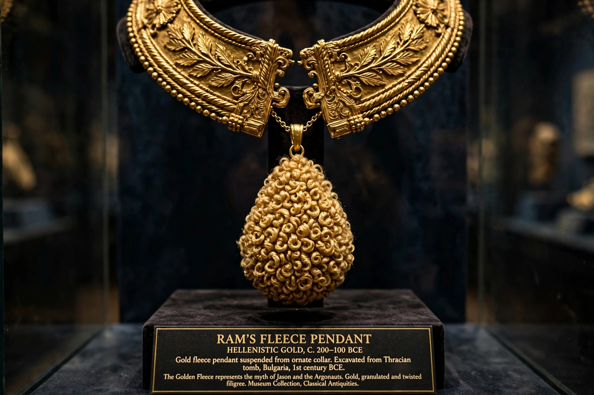

Order of the Golden Fleece
| Order of the Golden Fleece | |
| Type | Dynastic order of chivalry |
|---|---|
| Founded | 10 January 1430, Bruges, by Philip the Good, Duke of Burgundy |
| Motto | "Pretium non vile laborum" ("No mean reward for labour"); "Ante ferit quam flamma micet" |
| Branches | Spanish branch; Austrian branch |
| Insignia | Golden ram's fleece pendant on a collar of firesteels and flints |

The Order of the Golden Fleece (French: Ordre de la Toison d'or; Spanish: Orden del Toisón de Oro) is an order of chivalry founded in Bruges in 1430 by Philip the Good, Duke of Burgundy, on the occasion of his marriage to Isabella of Portugal. Modelled on the Arthurian Round Table and named for the Golden Fleece of Greek myth sought by Jason and the Argonauts, it became one of the most prestigious orders in Europe.
History
Membership was initially limited to 24, later 31 and eventually 51 knights, drawn from the high nobility; the duke was sovereign of the order. Through the Burgundian inheritance the order passed to the Habsburgs. After the War of the Spanish Succession (1701–14) it split into Spanish and Austrian branches, both of which continue: the Spanish order is conferred by the King of Spain, and the Austrian branch by the head of the House of Habsburg-Lorraine.
Insignia
The badge is a golden fleece (a ram's skin) suspended from a collar composed of interlocking firesteels (briquets) emitting sparks and flints, or worn on a red ribbon. The order's treasure, including the famous Burgundian court regalia, is held in the Imperial Treasury in Vienna.
Membership
Knights historically swore to defend the Catholic faith and the sovereign. Modern Spanish knights have included foreign monarchs and statesmen; the order's two branches occasionally disputed precedence but today coexist amicably.